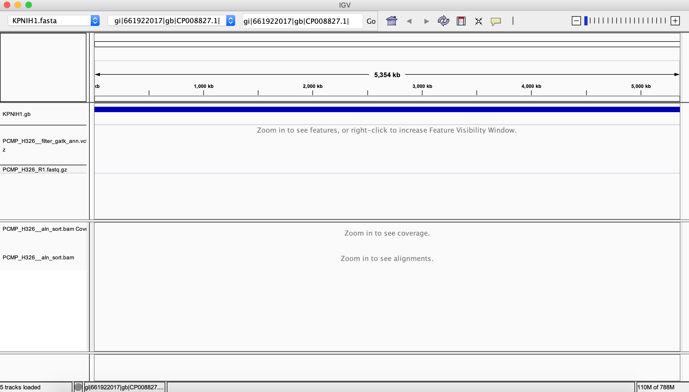
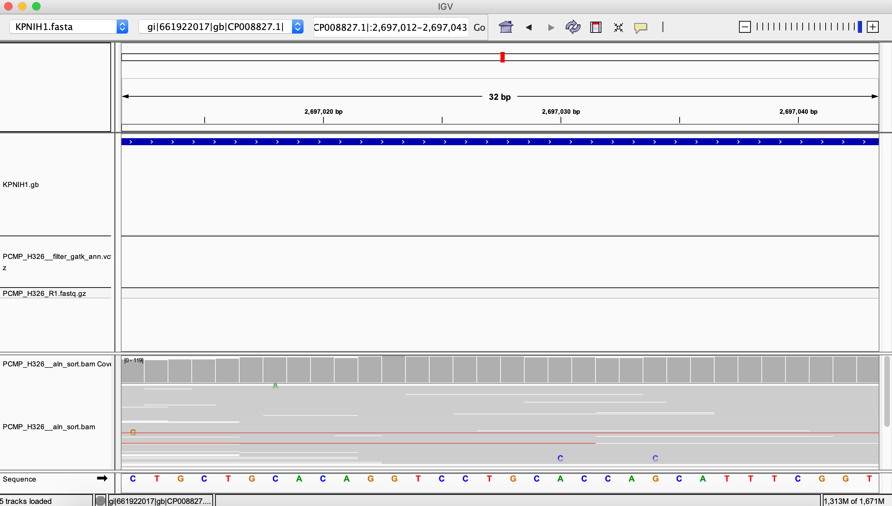

Day 1 Afternoon¶
Contamination Screening using FastQ Screen¶
When running a sequencing pipeline, it is very important to make sure that your data matches appropriate quality threshold and are free from any contaminants. This step will help you make correct interpretations in downstream analysis and will also let you know if you are required to redo the experiment/library preparation or resequencing or remove contaminant sequences.
For this purpose, we will employ fastq screen to screen one of our sample against a range of reference genome databases.
In the previous section, did you notice the sample fastq_screen.fastq.gz had only 28 % unique reads? What sequences does it contain?
To answer this, We will screen it against Human, Mouse and Ecoli genome and try to determine what percentage of reads are contaminant such as host DNA, i.e Human and mouse.
We have already created the human, mouse and ecoli reference databases inside fastq_screen tool directory which you can take a look by running:
ls /scratch/micro612w19_fluxod/shared/bin/fastq_screen_v0.5.2/data/
Note: You will learn creating reference databases in our afternoon session.
i. Get an interactive cluster node to start running programs. Use the shortcut that we created in .bashrc file for getting into interactive flux session.
How do you know if you are in interactive session?: you should see “username@nyx” in your command prompt
iflux
Whenever you start an interactive job, the path resets to your home directory. So, navigate to day1_after directory again.
d1a #or cd /scratch/micro612w19_fluxod/username/day1_after/
ii. Lets run fastq_screen on fastq_screen.fastq.gz
fastq_screen --subset 1000 --force --outdir ./ --aligner bowtie2 fastq_screen.fastq.gz #Note: We will screen only a subset of fastq reads against reference databases. To screen all the reads, change this argument to --subset 0 but will take long time to finish. (searching sequences against human or mouse genome is a time consuming step) #Also Dont worry about "Broken pipe" warning.
The above run will generate two types of output file: a screen report in text format “fastq_screen_screen.txt” and a graphical output “fastq_screen_screen.png” showing percentage of reads mapped to each reference genomes.
iii. Download the fastq_screen graphical report to your home computer for inspection.
Use scp command as shown below or use cyberduck. If you dont the file in cyberduck window, try refreshing it using the refresh button at the top.
scp username@flux-xfer.arc-ts.umich.edu:/scratch/micro612w19_fluxod/username/day1_after/fastq_screen_screen.png /path-to-local-directory/ #You can use ~/Desktop/ as your local directory path
Open fastq_screen_screen.png on your system. You will notice that the sample contain a significant amount of human reads; we should always remove these contaminants from our sample before proceeding to any type of microbial analysis.
Quality Control using FastQC¶
Now we will run FastQC on some sample raw data to assess its quality. FastQC is a quality control tool that reads in sequence data in a variety of formats(fastq, bam, sam) and can either provide an interactive application to review the results or create an HTML based report which can be integrated into any pipeline. It is generally the first step that you take upon receiving the sequence data from sequencing facility to get a quick sense of its quality and whether it exhibits any unusual properties (e.g. contamination or unexpected biological features)
i. In your day1_after directory, create a new directory for saving FastQC results.
mkdir Rush_KPC_266_FastQC_results mkdir Rush_KPC_266_FastQC_results/before_trimmomatic
ii. Verify that FastQC is in your path by invoking it from command line.
fastqc -h
FastQC can be run in two modes: “command line” or as a GUI (graphical user interface). We will be using command line version of it.
iii. Run FastQC to generate quality report of sequence reads.
fastqc -o Rush_KPC_266_FastQC_results/before_trimmomatic/ Rush_KPC_266_1_combine.fastq.gz Rush_KPC_266_2_combine.fastq.gz --extract
This will generate two results directory, Rush_KPC_266_1_combine_fastqc and Rush_KPC_266_2_combine_fastqc in output folder Rush_KPC_266_FastQC_results/before_trimmomatic/ provided with -o flag.
The summary.txt file in these directories indicates if the data passed different quality control tests in text format.
You can visualize and assess the quality of data by opening html report in a local browser.
iv. Exit your cluster node so you don’t waste cluster resources and $$$!
v. Download the FastQC html report to your home computer to examine using scp or cyberduck
scp username@flux-xfer.arc-ts.umich.edu:/scratch/micro612w19_fluxod/username/day1_after/Rush_KPC_266_FastQC_results/before_trimmomatic/*.html /path-to-local-directory/
The analysis in FastQC is broken down into a series of analysis modules. The left hand side of the main interactive display or the top of the HTML report show a summary of the modules which were run, and a quick evaluation of whether the results of the module seem entirely normal (green tick), slightly abnormal (orange triangle) or very unusual (red cross).

Lets first look at the quality drop(per base sequence quality graph) at the end of “Per Base Sequence Quality” graph. This degredation of quality towards the end of reads is commonly observed in illumina samples. The reason for this drop is that as the number of sequencing cycles performed increases, the average quality of the base calls, as reported by the Phred Scores produced by the sequencer falls.
Next, lets check the overrepresented sequences graph and the kind of adapters that were used for sequencing these samples (Truseq or Nextera) which comes in handy while indicating the adapter database path during downstream filtering step (Trimmomatic).
 and specificity (leaving all non-contaminant sequence data intact). Adapter and other technical contaminants can potentially occur in any location within the reads.(start, end, read-through (between the reads), partial adapter sequences)
Trimmomatic is a tool that tries to search these potential contaminant/adapter sequence within the read at all the possible locations. It takes advantage of the added evidence available in paired-end dataset. In paired-end data, read-through/adapters can occur on both the forward and reverse reads of a particular fragment in the same position. Since the fragment was entirely sequenced from both ends, the non-adapter portion of the forward and reverse reads will be reverse-complements of each other. This strategy of searching for contaminant in both the reads is called ‘palindrome’ mode.
For more information on how Trimmomatic tries to achieve this, Please refer this manual.
Now we will run Trimmomatic on these raw data to remove low quality reads as well as adapters.
i. If the interactive session timed out, get an interactive cluster node again to start running programs and navigate to day1_after directory.
How to know if you are in interactive session: you should see “username@nyx” in your command prompt
iflux cd /scratch/micro612w19_fluxod/username/day1_after/ #or d1a
ii. Create these output directories in your day1_after folder to save trimmomatic results
mkdir Rush_KPC_266_trimmomatic_results
iii. Try to invoke trimmomatic from command line.
java -jar /scratch/micro612w19_fluxod/shared/bin/Trimmomatic/trimmomatic-0.33.jar –h
iv. Run the below trimmomatic commands on raw reads.
java -jar /scratch/micro612w19_fluxod/shared/bin/Trimmomatic/trimmomatic-0.33.jar PE Rush_KPC_266_1_combine.fastq.gz Rush_KPC_266_2_combine.fastq.gz Rush_KPC_266_trimmomatic_results/forward_paired.fq.gz Rush_KPC_266_trimmomatic_results/forward_unpaired.fq.gz Rush_KPC_266_trimmomatic_results/reverse_paired.fq.gz Rush_KPC_266_trimmomatic_results/reverse_unpaired.fq.gz ILLUMINACLIP:/scratch/micro612w19_fluxod/shared/bin/Trimmomatic/adapters/TruSeq3-PE.fa:2:30:10:8:true SLIDINGWINDOW:4:15 MINLEN:40 HEADCROP:0

First, Trimmomatic searches for any matches between the reads and adapter sequences. Adapter sequences are stored in this directory of Trimmomatic tool: /scratch/micro612w19_fluxod/shared/bin/Trimmomatic/adapters/. Trimmomatic comes with a list of standard adapter fasta sequences such TruSeq, Nextera etc. You should use appropriate adapter fasta sequence file based on the illumina kit that was used for sequencing. You can get this information from your sequencing centre or can find it in FastQC html report (Section: Overrepresented sequences).
Short sections (2 bp as determined by seed misMatch parameter) of each adapter sequences (contained in TruSeq3-PE.fa) are tested in each possible position within the reads. If it finds a perfect match, It starts searching the entire adapter sequence and scores the alignment. The advantage here is that the full alignment is calculated only when there is a perfect seed match which results in considerable efficiency gains. So, When it finds a match, it moves forward with full alignment and when the match reaches 10 bp determined by simpleClipThreshold, it finally trims off the adapter from reads.
Quoting Trimmomatic:
“‘Palindrome’ trimming is specifically designed for the case of ‘reading through’ a short fragment into the adapter sequence on the other end. In this approach, the appropriate adapter sequences are ‘in silico ligated’ onto the start of the reads, and the combined adapter+read sequences, forward and reverse are aligned. If they align in a manner which indicates ‘read- through’ i.e atleast 30 bp match, the forward read is clipped and the reverse read dropped (since it contains no new data).”
v. Now create new directories in day1_after folder and Run FastQC on these trimmomatic results.
mkdir Rush_KPC_266_FastQC_results/after_trimmomatic fastqc -o Rush_KPC_266_FastQC_results/after_trimmomatic/ Rush_KPC_266_trimmomatic_results/forward_paired.fq.gz Rush_KPC_266_trimmomatic_results/reverse_paired.fq.gz --extract
Get these html reports to your local system.
scp username@flux-xfer.arc-ts.umich.edu:/scratch/micro612w19_fluxod/username/day1_after/Rush_KPC_266_FastQC_results/after_trimmomatic/*.html /path-to-local-directory/

After running Trimmomatic, you should notice that the sequence quality improved (Per base sequence quality) and now it doesn’t contain any contaminants/adapters (Overrepresented sequences).
Next, take a look at the per base sequence content graph, and notice that the head bases(~9 bp) are slightly imbalanced. In a perfect scenario, each nucleotide content should run parallel to each other, and should be reflective of the overall A/C/T/G content of your input sequence.
Quoting FastQC: “It’s worth noting that some types of library will always produce biased sequence composition, normally at the start of the read. Libraries produced by priming using random hexamers (including nearly all RNA-Seq libraries) and those which were fragmented using transposases inherit an intrinsic bias in the positions at which reads start. This bias does not concern an absolute sequence, but instead provides enrichment of a number of different K-mers at the 5’ end of the reads. Whilst this is a true technical bias, it isn’t something which can be corrected by trimming and in most cases doesn’t seem to adversely affect the downstream analysis. It will however produce a warning or error in this module.”
This doesn’t look very bad but you can remove the red cross sign by trimming these imbalanced head bases using HEADCROP:9 flag in the above command. This removes the first 9 bases from the start of the read. Often, the start of the read is not good quality, which is why this improves the overall read quality.
vi. Lets Run trimmomatic again with headcrop 9 and save it in a different directory called Rush_KPC_266_trimmomatic_results_with_headcrop/
mkdir Rush_KPC_266_trimmomatic_results_with_headcrop/ time java -jar /scratch/micro612w19_fluxod/shared/bin/Trimmomatic/trimmomatic-0.33.jar PE Rush_KPC_266_1_combine.fastq.gz Rush_KPC_266_2_combine.fastq.gz Rush_KPC_266_trimmomatic_results_with_headcrop/forward_paired.fq.gz Rush_KPC_266_trimmomatic_results_with_headcrop/forward_unpaired.fq.gz Rush_KPC_266_trimmomatic_results_with_headcrop/reverse_paired.fq.gz Rush_KPC_266_trimmomatic_results_with_headcrop/reverse_unpaired.fq.gz ILLUMINACLIP:/scratch/micro612w19_fluxod/shared/bin/Trimmomatic/adapters/TruSeq3-PE.fa:2:30:10:8:true SLIDINGWINDOW:4:20 MINLEN:40 HEADCROP:9
Unix gem: time in above command shows how long a command takes to run?
vii. Run FastQC ‘one last time’ on updated trimmomatic results with headcrop and check report on your local computer
mkdir Rush_KPC_266_FastQC_results/after_trimmomatic_headcrop/ fastqc -o Rush_KPC_266_FastQC_results/after_trimmomatic_headcrop/ --extract -f fastq Rush_KPC_266_trimmomatic_results_with_headcrop/forward_paired.fq.gz Rush_KPC_266_trimmomatic_results_with_headcrop/reverse_paired.fq.gz
Download the reports again and see the difference.
scp username@flux-xfer.arc-ts.umich.edu:/scratch/micro612w19_fluxod/username/day1_after/Rush_KPC_266_FastQC_results/after_trimmomatic_headcrop/*.html /path-to-local-directory/
The red cross sign disappeared!
Lets have a look at one of the Bad Illumina data example here
Earlier, We performed some quality control steps on our sequencing data to make it clean and usable for various downstream analysis. Now we will perform our first sequence analysis, specifically variant calling, and map these reads to a reference genome and try to find out the differences between them.
Read Mapping is one of the most common Bioinformatics operations that needs to be carried out on NGS data. The main goal behind read mapping/aligning is to find the best possible reference genome position to which reads could be aligned. Reads are generally mapped to a reference genome sequence that is sufficiently closely related genome to accurately align reads. There are number of tools that can map reads to a reference genome and they differ from each other in algorithm, speed and accuracy. Most of these tools work by first building an index of reference sequence which works like a dictionary for fast search/lookup and then applying an alignment algorithm that uses these index to align short read sequences against the reference.
These alignment has a vast number of uses, including:
- variant/SNP calling: Finding differences between your sequenced organism genome and the reference genome
- coverage estimation: If you have sufficient reads to cover each position of reference genome.
- gene expression analysis: determining the level of expression of each genes in a genome.
In this session, we will be covering the important steps that are part of any Read mapping/Variant calling bioinformatics pipleine.
Variant Calling for Collistin resistant Klebsiella pneumoniae¶
At the end of our morning session, we submitted a variant calling job to run all the variant calling steps on PCMP_H326 genome.
The goal of this exercise is to learn what standard variant calling steps are involved, how to combine and run these steps in an automated fashion and explore results that were generated at each step by the script.
Let us see what inputs and commands variant_call.sh script need to run variant calling on PCMP_H326.
Try running the script with help menu and check all the inputs that is required by the script.
./variant_call.sh -h
USAGE: variant_call.sh forward_paired reverse_paired reference_genome output_directory basename [-h] – A simple shell script to run Variant Calling steps on a pair of fastq reads.
The script requires following positional arguments as input to call variants:
- Forward Paired end reads
- Reverse Paired end reads
- Path to Reference Genome Fasta file
- Output Directory Path. A new directory will be created at this path by the name that you will provide for Analysis Base name. for example: if the output path is /dir_1/dir_2/ and Analysis Base name is sample_name , a new directory by the name sample_name_varcall_result will be created in /dir_1/dir_2/
- Analysis Base name to store result files with this prefix.
If you remember, we ran the shell script in following fashion inside day1_after directory.
bash ./variant_call.sh PCMP_H326_R1.fastq.gz PCMP_H326_R2.fastq.gz /Path-to-your-day1_after/KPNIH1.fasta /Path-to-your-day1_after/ PCMP_H326_
The script generates PCMP_H326__varcall_result folder in your day1_after folder and the results for each step of variant calling will be organized in 6 different steps folder. Each of these steps represents a particular step involved in variant calling starting from cleaning the reads to calling variants.
These 6 folders are:
1. Step1_cleaning
2. Step2_mapping
3. Step3_samtobamconversion
4. Step4_removeduplicates
5. Step5_variantcalling
6. Step6_variantfilteraion
Try listing the folders in PCMP_H326__varcall_result:
ls -1ad PCMP_H326__varcall_result/*
Step1_cleaning¶
This folder contains results generated by Trimmomatic. Since we already went through the results earlier, we will be skipping the Trimmomatic command and move on to Step 2.
Step2_mapping¶

This folder contains results that were generated by mapping reads against a finished reference genome using BWA
Choosing the right read mapper is crucial and should be based on the type of analysis and data you are working with. Each aligners are meant to be better used with specific types of data, for example:
For whole genome or whole exome sequencing data: Use BWA for long reads (> 50/100 bp), use Bowtie2 for short reads (< 50/100bp) For transcriptomic data (RNA-Seq): use Splice-aware Mapper such as Tophat. (Not applicable for microbial data)
Here, we will be using BWA aligner to map the reads against a reference genome, KPNIH1.
BWA is one of the several read mappers that are based on Burrows-Wheeler transform algorithm. If you feel like challenging yourselves, you can read BWA paper here
Read Mapping is a time-consuming step that involves searching the reference and finding the optimal location for the alignment for millions of reads. Creating an index file of a reference sequence for quick lookup/search operations significantly decreases the time required for read alignment. Imagine indexing a genome sequence like the index at the end of a book. If you want to know on which page a word appears or a chapter begins, it is much more efficient to look it up in a pre-built index than going through every page of the book. Similarly, an index of a large DNA sequence allows aligners to rapidly find shorter sequences embedded within it.
Note: each read mapper has its own unique way of indexing a reference genome and therefore the reference index created by BWA cannot be used for Bowtie. (Most Bioinformatics tools nowadays require some kind of indexing or reference database creation)
You can move over to Step 2: Read Mapping section in the shell script to see what commands were used for this step.
Most of the Bioinformatics programs as BWA and Bowtie use a computational strategy known as ‘indexing’ to speed up their mapping algorithms. Like the index at the end of a book, an index of a large DNA sequence allows one to rapidly find shorter sequences embedded within it.
The following command creates an index for the reference genome required for BWA aligner.
bwa index KPNIH1.fasta
This command creates fai index file using samtools that is required by GATK in downstream steps.
samtools faidx KPNIH1.fasta
Quoting BWA: “BWA consists of three algorithms: BWA-backtrack, BWA-SW and BWA-MEM. The first algorithm is designed for Illumina sequence reads up to 100bp, while the rest two for longer sequences ranged from 70bp to 1Mbp. BWA-MEM and BWA-SW share similar features such as long-read support and split alignment, but BWA-MEM, which is the latest, is generally recommended for high-quality queries as it is faster and more accurate. BWA-MEM also has better performance than BWA-backtrack for 70-100bp Illumina reads.”
For other algorithms employed by BWA, you can refer to BWA manual
The second part of read mapping involves aligning both left and right end reads to our reference using BWA alignment algorithm ‘mem’.
The following command was used to do this job using both forward and reverse end reads along with a reference genome.
bwa mem -M -R "@RG ID:16 SM:PCMP_H326_R1.fastq.gz LB:1 PL:Illumina" -t 8 /nfs/esnitkin/micro612w19_fluxod/shared/data/day1_after/KPNIH1.fasta /nfs/esnitkin/micro612w19_fluxod/shared/data/day1_after/PCMP_H326__varcall_result/forward_paired.fq.gz /nfs/esnitkin/micro612w19_fluxod/shared/data/day1_after/PCMP_H326__varcall_result/reverse_paired.fq.gz > /nfs/esnitkin/micro612w19_fluxod/shared/data/day1_after/PCMP_H326__varcall_result/PCMP_H326__aln.sam
Read group tells aligners/other tools that certain reads were sequenced together on a specific lane. If you have multiplexed samples in a single lane, you will get multiple samples in a single read group. If you sequenced the same sample in several lanes, you will have multiple read groups for the same sample.
This string with -R flag says that all reads belongs to ID:16 and library LB:1; with sample name SM:PCMP_H326_R1.fastq.gz and was sequenced on illumina platform PL:Illumina.
You can extract this information from fastq read header.
@D00728:16:hf2mtbcxx:2:1101:1580:2235 1:N:0:ACTGAGCG+GTAAGGAG
The output of BWA and most of the short-reads aligners is a SAM file. SAM format is considered as the standard output for most read aligners and stands for Sequence Alignment/Map format. It is a TAB-delimited format that describes how each reads were aligned to the reference sequence.
Lets explore first few lines of .sam file. Go to day1_after directory and then change directory to PCMP_H326__varcall_result/Step2_mapping/
d1a cd PCMP_H326__varcall_result/Step2_mapping/ head -n4 PCMP_H326__aln.sam
example:
@SQ SN:gi|661922017|gb|CP008827.1| LN:5394056 @RG ID:16 SM:PCMP_H326_R1.fastq.gz LB:1 PL:Illumina @PG ID:bwa PN:bwa VN:0.7.12-r1039 CL:bwa mem -M -R @RG\tID:16\tSM:PCMP_H326_R1.fastq.gz\tLB:1\tPL:Illumina -t 8 /nfs/esnitkin/micro612w19_fluxod/shared/data/day1_after/KPNIH1.fasta /nfs/esnitkin/micro612w19_fluxod/shared/data/day1_after/PCMP_H326__varcall_result/forward_paired.fq.gz /nfs/esnitkin/micro612w19_fluxod/shared/data/day1_after/PCMP_H326__varcall_result/reverse_paired.fq.gz D00728:16:hf2mtbcxx:2:1101:1580:2235 99 gi|661922017|gb|CP008827.1| 4442353 60 251M = 4442534 413 GTTCCAGGCGTTCGCCATCCAGCCAAGATTGAGCGCGGTAATACCTTTGTCCCAGAACTCCGGGCTGACATAGTTTTTCAGGCGTTGATCTTCATAGATCTGCGGTACCGAAATGTTCAACCGCAGGGAGGACTGGACCAGGTTGTCTTTGACGTTTTCTTCGTTGCGCCAGGATTTGAGGCTACCGCAGTAGCCCTCCTGCTCGCTCAGCTGCGGATTGAGCTTTTCCGCCGCGATGCCATATTGGGCCA DDDDDIIHIIIIIIIIIIIIIIIIIIIIIIIIIIIIIIIIIIIIIIIIIIIIIIHIIIIIIIIIIIIIIIIIIHIIIIIIIIIIIIIIIIIIIIIIIIIIIIIIIIIIIIIIIIIIIIIIHHHIIIIIIIIHGHIHHIIIIEHIIIIIIIIIIIHIIIHIHIHIIHIIIHGDHHHIGHHIHHIIIHIIIHIIIIIIIIIHHIIIICHIIHIHIIHGDHHHCGHHIIIGIDHHDH:+CGHHHHHEEHE@E@5 NM:i:0 MD:Z:251 AS:i:25XS:i:0 RG:Z:16
The lines starting with “@” is a header section and contains information about reference genome, sample read group and the aligner command that was used for aligning the samples. The header section is followed by an alignment section information for each read. It contains 11 columns and an optional TAG option.
Detailed information about these 11 columns can be obtained from this pdf document.
The second column consists of coded bitwise flags where each code flag carries important information about the alignment. Open this site and enter the flag “99” to find out what it stands for.
The last section “NM:i:0 MD:Z:251 AS:i:25XS:i:0 RG:Z:16” is an optional tag section and varies for different aligners(specifications based on aligners).
Here,
NM tag tells number of changes necessary to make it equal to the reference(2 changes)
MD tag tells you what positions in the read alignment are different from reference base and is used by variant callers to call SNP’s.
AS is an alignment score and XS:i:0 is an suboptimal alignment score.
Step3_samtobamconversion¶
The next step involves manipulating the SAM files generated by the BWA aligner using Samtools
BAM is the compressed binary equivalent of SAM but are usually quite smaller in size than SAM format. Since, parsing through a SAM format is slow, Most of the downstream tools require SAM file to be converted to BAM so that it can be easily sorted and indexed.
The first section for this step will ask samtools to convert SAM format(-S) to BAM format(-b)
samtools view -Sb PCMP_H326__aln.sam > PCMP_H326__aln.bam
The next section will sort these converted BAM file using SAMTOOLS
Most of the downstream tools such as GATK requires your BAM file to be indexed and sorted by reference genome positions.
Now before indexing this BAM file, we will sort the data by positions(default) using samtools. Some RNA Seq/Gene expression tools require it to be sorted by read name which is achieved by passing -n flag.
samtools sort PCMP_H326__aln.bam PCMP_H326__aln_sort
Step4_removeduplicates¶
This step will mark duplicates(PCR optical duplicates) and remove them using PICARD
Illumina sequencing involves PCR amplification of adapter ligated DNA fragments so that we have enough starting material for sequencing. Therefore, some amount of duplicates are inevitable. Ideally, you amplify upto ~65 fold(4% reads) but higher rates of PCR duplicates e.g. 30% arise when people have too little starting material such that greater amplification of the library is needed or some smaller fragments which are easier to PCR amplify, end up over-represented.
For an in-depth explanation about how PCR duplicates arise in sequencing, please refer to this interesting blog
Picard identifies duplicates by searching reads that have same start position on reference or in PE reads same start for both ends. It will choose a representative from each group of duplicate reads based on best base quality scores and other criteria and retain it while removing other duplicates. This step plays a significant role in removing false positive variant calls(such as sequencing error) during variant calling that are represented by PCR duplicate reads.

To run this step, we first need to create a dictionary for reference fasta file that is required by PICARD
java -jar /scratch/micro612w19_fluxod/shared/bin/picard-tools-1.130/picard.jar CreateSequenceDictionary REFERENCE=KPNIH1.fasta OUTPUT=KPNIH1.dict
Once the sequence dictionary is created, PICARD can be run for removing duplicates
java -jar /scratch/micro612w19_fluxod/shared/bin/picard-tools-1.130/picard.jar MarkDuplicates REMOVE_DUPLICATES=true INPUT=PCMP_H326__aln_sort.bam OUTPUT=PCMP_H326__aln_marked.bam METRICS_FILE=PCMP_H326__markduplicates_metrics CREATE_INDEX=true VALIDATION_STRINGENCY=LENIENT
The output of Picard remove duplicate step is a new bam file “PCMP_H326__aln_marked.bam” without PCR duplicates.
This bam file should be indexed before we can use it for variant calling.
samtools index PCMP_H326__aln_marked.bam
Variant Annotation using snpEff¶
Variant annotation is one of the crucial steps in any variant calling pipeline. Most of the variant annotation tools create their own database or use an external one to assign function and predict the effect of variants on genes. We will try to touch base on some basic steps of annotating variants in our vcf file using snpEff.
You can annotate these variants before performing any filtering steps that we did earlier or you can decide to annotate just the final filtered variants.
snpEff contains a database of about 20,000 reference genomes built from trusted and public sources. Lets check if snpEff contains a database of our reference genome.
Make sure you change the directory to Step6_variantfilteraion
d1a cd PCMP_H326__varcall_result/Step6_variantfilteraion
i. Check snpEff internal database for your reference genome:
java -jar /scratch/micro612w19_fluxod/shared/bin/snpEff/snpEff.jar databases | grep 'kpnih1'
The existing KPNIH1 reference database doesn’t contain mgrB annotation in it so we built a custom database out of a custom KPNIH1 genbank file. The procedure to configure a custom database can be found here.
grep -v '#' AlignmentSummaryMetrics.txt | cut -f7
Try to explore other statistics and their definitions from Picard AlignmentSummaryMetrics link
ii. Estimate read coverage/read depth using Picard
Read coverage/depth describes the average number of reads that align to, or “cover,” known reference bases. The sequencing depth is one of the most crucial issue in the design of next-generation sequencing experiments. This paper review current guidelines and precedents on the issue of coverage, as well as their underlying considerations, for four major study designs, which include de novo genome sequencing, genome resequencing, transcriptome sequencing and genomic location analyses
After read mapping, it is important to make sure that the reference bases are represented by enough read depth before making any inferences such as variant calling.
java -jar /scratch/micro612w19_fluxod/shared/bin/picard-tools-1.130/picard.jar CollectWgsMetrics R=KPNIH1.fasta I=PCMP_H326__varcall_result/Step5_variantcalling/PCMP_H326__aln_marked.bam O=WgsMetrics.txt
Open the file “WgsMetrics.txt” and explore various statistics. It will generate various statistics and the definition for each can be found here.
Print column names
grep 'GENOME_TERRITORY' WgsMetrics.txt | tr '\t' '\n' | cat --number
Since “WgsMetrics.txt” also contains histogram information, we will run commands on only the first few lines to extract information.
- Question: Extract mean coverage information from “WgsMetrics.txt”
grep -v '#' WgsMetrics.txt | cut -f2 | head -n3
Question: Percentage of bases that attained at least 5X sequence coverage.
grep -v '#' WgsMetrics.txt | cut -f13 | head -n3
Question: Percentage of bases that had siginificantly high coverage. Regions with unusually high depth sometimes indicate either repetitive regions or PCR amplification bias.
grep -v '#' WgsMetrics.txt | cut -f25 | head -n3
Visualize BAM and VCF files in IGV (Integrative Genome Viewer)¶
While these various statistical/text analyses are helpful, visualization of all of these various output files can help in making some significant decisions and inferences about your entire analysis. There are a wide variety of visualization tools out there that you can choose from for this purpose.
We will be using IGV (Integrative Genome Viewer) here, developed by the Broad Institute for viewing BAM and VCF files for manual inspection of some of the variants.
- Required Input files:
- KPNIH1 reference fasta
- KPNIH1 genbank file
- PCMP_H326__aln_marked.bam
- PCMP_H326__aln_marked.bam.bai
- PCMP_H326__filter_gatk_ann.vcf.gz
- PCMP_H326__filter_gatk_ann.vcf.gz.tbi
Note: This IGV exercise requires an annotated vcf file, so make sure you have completed snpeff exercise successfully.
Let’s make a seperate folder (make sure you are in the day1_after folder) for the files that we need for visualization and copy it to that folder:
d1a mkdir IGV_files cp KPNIH1.fasta KPNIH1.gb PCMP_H326__varcall_result/*/PCMP_H326__aln_marked.bam* PCMP_H326__varcall_result/*/PCMP_H326__filter_gatk_ann.vcf.gz* IGV_files/
Open a new terminal and run the scp command or cyberduck to get these files to your local system:
scp -r username@flux-xfer.arc-ts.umich.edu:/scratch/micro612w19_fluxod/username/day1_after/PCMP_H326__varcall_result/IGV_files/ /path-to-local-directory/ #You can use ~/Desktop/ as your local directory path
Start IGV.
Load the following files (each is a separate panel or ‘track’):
Genomes→
Load Genome from File→
navigate toIGV_files→
KPNIH1.fasta- Shows where in the genome you are at the top
File→
Load from File→
navigate toIGV_files→
KPNIH1.gb- Shows what genes are present (looks like a blue bar when zoomed out)
File→
Load from File→
navigate toIGV_files→
PCMP_H326__aln_sort__filter_gatk_ann.vcf.gz- Shows variants found in the sample (when you zoom in)
File→
Load from File→
navigate toIGV_files→
PCMP_H326__aln_marked.bam- Shows coverage and reads aligned to the reference (when you zoom in)
By default, the whole genome is shown:

Using the plus sign in the top right corner of the window, zoom in by clicking 3 times
- You should see grey bars in the vcf track and blue bars in the fastq track, both showing variant positions
- You can hover over the bars to get more information about the variant
- Light grey and light blue indicate homozygous variants, while dark grey and dark blue indicate heterozygous variants
- You can navigate to different sections of the genome by moving the red bar at the top

Zoom in ~5 more times until you see reads appear in the bottom part of the window
- You should see coverage and reads mapped in bottom half of the window
- Different colors indicate different variants
- In the Coverage track, the y-axis indicates read coverage
- You can now also see distinct genes in the genbank annotation track
- You can hover over a read to get more information about it

To see all of the reads, you can click the square with the arrows pointing to each corner, found in the top-middle-right of the window:

If you zoom in all the way, you can see the nucleotide sequence at the bottom of the screen as well as nucleotide variants in the reads:

Now that you know the basics of how to use IGV, let’s navigate to the mgrB gene to look at mutations that might make this sample resistant to colistin.
- In the top middle bar of the window, type in gi|661922017|gb|CP008827.1|:3,359,811-3,360,323
- Look at the gene annotation by hovering over the blue bar to see what gene it is
- What is the nucleotide of the SNP in the sample? The amino acid change?
- Do you think this variant might be the cause of colistin resistance? Why or why not?

Now let’s look an example of a heterozygous variant - variant positions where more than one allele (variant) with sufficiently high read depth are observed.
- Navigate to gi|661922017|gb|CP008827.1|:2,265,249-2,273,465
- You can see that there are a lot of heterozygous variants in one region.
- We removed these types of variants during our Variant Filteration step using the FQ value. (If the FQ is unusually high, it is suggestive of a heterozygous variant and negative FQ value is a suggestive of true variant as observed in the mapped reads)
- In the region with lots of heterozygous variants, the read coverage is much higher than in the flanking regions (the regions on either side), and much higher than the rest of the genome coverage.
- Why do you think this region contains many heterozygous variants and a higher read coverage than the rest of the genome?
- You can also see that there are some places with no reads and no coverage. What does this mean?

You can inspect these type of HET variants later for any gene duplication or copy number analysis (by extracting variant positions with high FQ values). Addition of these details will give a better resolution while inferring phylogenetic trees.
You can refer to the IGV User Guide for more information about how to use IGV.
Exercise – Daptomycin resistance in VRE¶
Today we ran a variant calling pipeline for a colistin resistant isolate against a susceptible reference. In that case the susceptible reference genome was somewhat arbitrarily selected, in that it had no epidemiologic relationship to the resistant isolate. This worked out, because we had an idea of what gene the resistance mutation should be in, and we were able to fish it out from the relatively large number of differences. In this exercise we will take a different approach of comparing our resistant isolate to a susceptible isolate from the same patient. In particular, these samples both come from a patient infected with VRE before and after treatment with daptomycin. The first sample was the patient’s initial sample and is susceptible to daptomycin, and the second was after daptomycin resistance emerged during treatment. Your goal is to map reads from the resistant genome (VRE_daptoR) to the susceptible reference (VRE_daptoS_ref_strain.fa) and search for variants that may be associated with resistance. To accomplish this you will run the programs from this session to generate filtered variant files (VCF), and then explore these variants in IGV to see what genes they are in (we have provided you with a gff file with gene annotations that can be loaded into IGV - VRE_daptoS_gene_annot.gff3). To help with your interpretation, see if you see any genes hit that were reported in this paper, which was the first to identify putative daptomycin resistance loci (hint: non-coding variants can be functional, so make sure you look at what genes are downstream of inter-genic variants).
Your steps should be:
- Create a PBS script to run the shell script in the directory and submit to cluster
- Load files into IGV and examine annotations of genes in or around variants in filtered vcf (*note snpEff annotation should be skipped because our reference is not in the database)
Exercise – Colistin resistance in Acinetobacter¶
In the second exercise we will try and find a mutation that is in a colistin resistant Acinetobacter isolate from a patient, but not in a colistin susceptible isolate from the same patient. In this case, it turned out that despite being from the same patient, the resistant and susceptible genomes are quite different. Therefore, we will focus on differences in a known resistance gene (pmrB). Your task is to run the variant calling and annotation pipelines for SRR7591081 (colR) and SRR6513781 (colS) against the ACICU reference genome (ACICU.fasta). You will then look for pmrB mutations that are in the resistant strain, that are not in the susceptible one. Did the mutation you found match the one from the paper i.e patient 1.
Your steps should be:
- Create two PBS scripts comparing your colR and colS genomes to the reference genomes and submit to cluster
- Perform variant annotation against the ACICU reference genome with snpEff
- Create parsed annotated variant matrix
- Determine if colR has a pmrB mutation that the colS isolate does not, and compare it to the mutation found in the paper